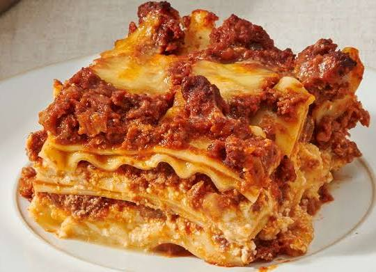

Lasagna

Description
Lasagna is a classic Italian comfort food made by layering tender pasta sheets with a rich meat or vegetable sauce, creamy béchamel or ricotta cheese, mozzarella, and Parmesan before baking everything until golden and bubbling. Each layer blends together to create a hearty, flavorful dish with a perfect balance of savory sauce, melted cheese, and soft pasta.
This homemade lasagna is ideal for family dinners, special occasions, or meal prep, as it can be prepared in advance and tastes even better the next day. Serve it hot with garlic bread and a fresh green salad for a complete and satisfying meal.
Ingredients
9 lasagna sheets
250 g ground beef (or mixed vegetables for a vegetarian version)
2 cups pasta sauce
2 cups mozzarella cheese, shredded
1 cup ricotta cheese (or cottage cheese)
- ¼ cup Parmesan cheese, grated
- 2 cloves garlic, minced
- 1 tbsp olive oil
- Salt and black pepper, to taste
Steps :
- Preheat the oven to 180°C (350°F).
- Cook the filling: Heat olive oil in a pan, sauté garlic, add the ground beef (or vegetables), then stir in the pasta sauce. Season with salt, pepper, and Italian seasoning. Simmer for 5–10 minutes.
- Prepare the layers: Spread a thin layer of sauce in a baking dish. Add lasagna sheets, then ricotta cheese, meat sauce, and mozzarella cheese.
- Repeat the layers until all the ingredients are used, finishing with mozzarella and Parmesan cheese on top.
- Bake for 35–40 minutes, or until the cheese is melted and golden brown.
- Rest for 10 minutes before slicing and serving. Enjoy!